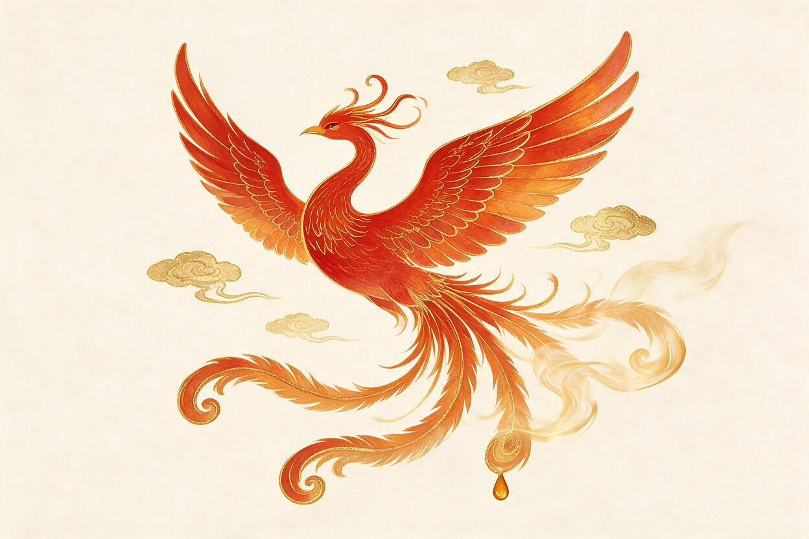

春 · 绯羽Spring · Scarlet Plume
蜜香红茶头春嫩芽，蜜韵悠长，如初阳落盏。

ANQI TEA · EST. 2026
A Feather's Flash · A Cup of the East
安祺与茶 —— 以千年朱雀之灵，焙一盏当代东方茶。
四季轮转，四羽四味。每一片羽毛，都是一盏风味的诗。
头春嫩芽，蜜韵悠长，如初阳落盏。
岩骨花香，炽烈如风过赤崖。
桂子飘香，金汤澄澈，饮一盏秋光。
岁月陈香，温厚如围炉夜话。
← 拖动探索 →
我们相信，古老的图腾值得被年轻的手重新点亮。从高山茶园到城市街巷，安祺与茶以现代工艺致敬千年茶脉。
城市门店
茶园海拔（米）
制茶工序
明前采摘，一芽一叶，高山云雾滋养。
三十六道古法工序，文火慢焙，方得岩骨花香。
不做旧的茶，只做年轻人的第一盏东方。
朱雀，南方之神，衔火而行，所至皆春。安祺与茶取其神韵——以火焙茶，以茶传火。
每一片茶叶历经采、晒、摇、炒、焙三十六道工序，如朱雀浴火，方显真味。
今天，这簇火落在年轻的手中。一盏茶，是图腾，也是日常。